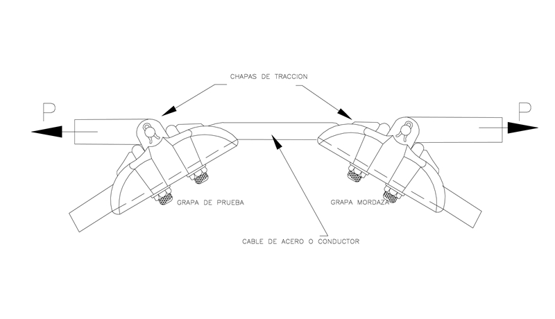
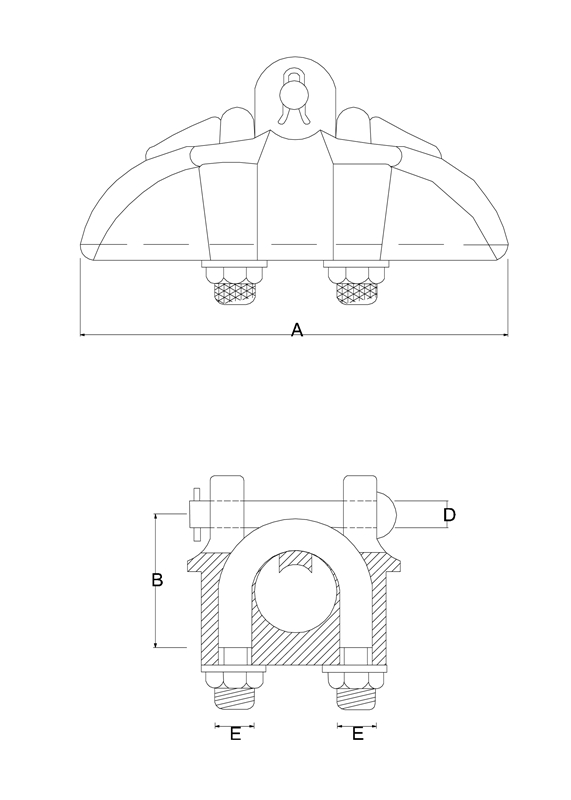

Siempre es más fácil conocer las normas ENEL-CODENSA
Rolex Rolex gold watch, compared with ordinary materials, gold watches are often expensive, but the replica rolex gold watch has the role of swiss replica watches hedging, so that it often becomes the first choice for collectors. The gold watch has value in the world, largely because the omega replica watch brand launched a commemorative limited edition watch or a replica hublot complex movement process or artistic attainments deep watches, mostly preferred gold precious metals such material. These watches tend to have a strong hedging function, therefore, Rolex Rolex gold watch reputation.

ET351 Grapa de suspensión metálica para MT
Datos adicionales
Número de especificación
ET351
Fecha de vigencia
02/12/2019
Herramientas adicionales
- Contenido Ocultar
- 1. OBJETO
- 2. ALCANCE
- 3. CONDICIONES DE SERVICIO
- 4. SISTEMA DE UNIDADES
- 5. NORMAS DE FABRICACIÓN Y PRUEBAS
- 6. REQUISITOS
- 6.1. MATERIAS PRIMAS
- 6.2. DETALLES CONSTRUCTIVOS
- 6.3 REQUISITOS QUÍMICOS
- 6.4. TRATAMIENTO TÉRMICO
- 6.5. REQUISITOS MECÁNICOS
- 6.6. REQUISITOS DE RECUBRIMIENTO
- 6.7. REQUISITOS DE ACABADO
- 6.8. ACCESORIOS
- 7. CRITERIOS DE ACEPTACIÓN O RECHAZO
- 8. PRUEBAS
- 8.1 PRUEBAS TIPO
- 8.1.1 Verificación visual y dimensional
- 8.1.2. Pruebas de deslizamiento
- 8.1.3. Prueba de rotura
- 8.1.4. Pruebas de envejecimiento climático y corrosión
- 8.1.5 Pruebas de Galvanizado
- 8.1.6 Otros
- 8.2 PRUEBAS DE RECEPCIÓN
- 9. EMPAQUE Y ROTULADO
- 9.1. EMPAQUE
- 9.2. ROTULADO
- 9.3. MARCACIÓN
- 10. PRESENTACIÓN DE LAS OFERTAS
- ANEXO 1. CARACTERÍSTICAS TÉCNICAS
1. OBJETO
Esta especificación técnica tiene por objeto establecer las características y requisitos técnicos que deben satisfacer las grapas de suspensión para líneas aéreas de media tensión en sistemas de distribución.2. ALCANCE
Esta especificación técnica se aplicará en todas las grapas de suspensión metálicas para líneas aéreas de media tensión que adquiera ENEL CODENSA.3. CONDICIONES DE SERVICIO
Las grapas se utilizarán en las siguientes condiciones:| CARACTERÍSTICAS AMBIENTALES | |
| Altura sobre el nivel del mar | 2 700 m.s.n.m. |
| Ambiente | Tropical |
| Humedad relativa | Desde 20 % al 100 % |
| Temperatura | -5 °C a 45 °C |
| Polución | Media |
Las grapas deben permitir sujetar los siguientes cables:
| # | Global | SAP | Tipo | Norma | Descripción |
| 1 | GSC003.3 | 6762276 | ACSR | ASTM B 232/B 232M | Raven 1/0 AWG |
| 2 | GSC003.4 | 6762335 | ACSR | ASTM B 232/B 232M | Quail. 2/0 AWG |
| 3 | GSC003.5 | 6762309 | ACSR | ASTM B 232/B 232M | Penguin. 4/0 AWG |
| 4 | GSC003.6 | 6762293 | ACSR | ASTM B 232/B 232M | Partridge. 266,8 kcmil |
Preferiblemente como una sola unidad.
4. SISTEMA DE UNIDADES
Todos los documentos tanto de la propuesta como del contrato de suministro, deben expresar las cantidades numéricas en unidades del sistema internacional (SI). Si el oferente utiliza en sus libros de instrucción, folletos o dibujos, unidades en sistemas diferentes, debe hacer las conversiones respectivas.5. NORMAS DE FABRICACIÓN Y PRUEBAS
| NORMA | DESCRIPCIÓN |
| NTC 2076 | Recubrimiento de zinc por inmersión en caliente para elementos en hierro y acero. |
| NTC 2772 | Electrotecnia. Herrajes y accesorios para redes y líneas aéreas de distribución de energía eléctrica. Grapas de suspensión |
Pueden emplearse otras normas internacionalmente reconocidas equivalentes o superiores a las aquí señaladas, siempre y cuando se ajusten a lo solicitado en la presente especificación técnica.
Las normas citadas en la presente especificación (o cualquier otra que llegare a ser aceptada por ENEL CODENSA) se refieren a su última revisión.
6. REQUISITOS
6.1. MATERIAS PRIMAS
Las grapas de suspensión estarán construidas con materiales de la mejor calidad para ese fin, debiéndose descartar el empleo de materiales alterables por la humedad, radiación solar y otras condiciones ambientales desfavorables.Las grapas se pueden fabricar en cualquiera de los materiales de la tabla, teniendo en cuenta el material del cable que está en contacto con la grapa, para minimizar el par galvánico y la pérdida de potencia debida al calentamiento por efecto magnético.
Deben fabricarse en cualquiera de los siguientes procesos: fundición en arena, fundición a presión, fundición en moldes permanentes o semipermanentes y por forja.
| MATERIAL DEL CABLE | MATERIAL DE LA GRAPA |
| De aleación de aluminio | De aleación de aluminio 356-T6 o equivalente |
| De aluminio y alma de acero (cable ACSR) | De aluminio o aleación de aluminio 356-T6 o equivalente |
6.2. DETALLES CONSTRUCTIVOS
La grapa de suspensión se compone del cuerpo y la mordaza.Será diseñada de tal forma que permita el desplazamiento lateral del conductor en un ángulo de 30° como máximo, a uno y otro lado del plano vertical, y además que, aplicando un esfuerzo longitudinal sobre el conductor, el conjunto describa una traslación paralela.
El material estará libre de grietas, cavidades, sopladuras, defectos superficiales o internos y de cualquier falla que pudiera afectar su correcto funcionamiento.
La grapa de suspensión tendrá los elementos necesarios para lograr los grados de movimiento indicados. Los componentes del conjunto de suspensión serán imperdibles entre sí.
Tendrán un diseño racional tal que no origine sobre el conductor esfuerzos concentrados que produzcan su deterioro. La garganta de la grapa donde se aloje el conductor deberá tener un perfil adecuado, sin aristas vivas ni radios de curvatura pequeños, en todos los puntos que puedan tomar contacto con el cable.
6.3 REQUISITOS QUÍMICOS
El cuerpo de la grapa pueden ser de cualquier material de los indicados en la tabla No.2, que cumpla con las exigencias mecánicas establecidas en la tabla No. 3.| TIPO DE MATERIAL: | ALEACIÓN DE ALUMINIO A 356 |
| % Manganeso | 0,1 |
| % Silicio | 6,50 a 7,50 |
| % Magnesio | 0,25 a 0,40 |
| % Cobre | 0,1 |
| % Hierro | 0,4 |
| % Zinc | 0,1 |
| % Titanio | 0,2 |
| % Aluminio | 91,2 |
6.4. TRATAMIENTO TÉRMICO
La letra “T” del tratamiento térmico, significa que es tratado térmicamente con anterioridad al último tratamiento térmico.El tratamiento T6 significa que es solubilizado, enfriado rápidamente en sales y envejecido artificialmente.
6.5. REQUISITOS MECÁNICOS
Las grapas deben cumplir satisfactoriamente con los requisitos de resistencia que se dan en la siguiente tabla:| TIPO DE GRAPA | DESLIZAMIENTO | ROTURA |
| Grapa de suspensión | 25 | 60 |
6.6. REQUISITOS DE RECUBRIMIENTO
Los elementos ferrosos serán totalmente galvanizados por inmersión en caliente y deberán cumplir con lo especificado en la NTC 2076 y deben estar libres de burbujas, áreas sin revestimiento, depósitos de escoria, escoriaciones o cualquier otra imperfección.Para zonas contaminadas se especificarán galvanizados superiores, como se indica en la tabla siguiente:
| APLICACIÓN | PROMEDIO gr/m2 | MÍNIMO gr/m2 |
| Elementos ferrosos | 825 | 750 |
6.7. REQUISITOS DE ACABADO
Las grapas deberán estar libres de deformaciones, aristas cortantes y rellenos. La superficie de contacto entre el conductor y la grapa debe ser completamente lisa y exenta de bordes cortantes que puedan tallar el conductor.6.8. ACCESORIOS
Los pernos en U deberán fabricarse en acero de grado tal que la grapa cumpla con las características mecánicas (deslizamiento y resistencia a la tensión),siguiendo la ET465 en lo que se refiere al perno en U. El roscado puede efectuarse por laminado o por corte y rectificado.La rosca no deberá reparase después del galvanizado. Las dimensiones de la rosca serán standard.
Los pisa cables y cualquier otro elemento que este en contacto con el conductor se construirán con la misma aleación de la grapa y recibirá el mismo tratamiento térmico.
Las arandelas de presión deberán cumplir con la ET462. Las tuercas deberán cumplir con los requisitos establecidos en la ET463.
7. CRITERIOS DE ACEPTACIÓN O RECHAZO
Si el número de elementos defectuosos es menor o igual al correspondiente número de defectuosos definidos a continuación, se deberá considerar que el lote cumple con los requisitos técnicos exigidos por ENEL CODENSA, en caso contrario, el lote se rechazará.Inspección Visual y Dimensional
De acuerdo a la tabla a continuación.
| Tabla inspección visual y dimensional | |||
| Tamaño del lote | Muestra | Aceptado | Rechazado |
| 2 a 8 | 2 | 0 | 1 |
| 9 a 15 | 2 | 0 | 1 |
| 16 a 25 | 2 | 0 | 1 |
| 26 a 50 | 3 | 0 | 1 |
| 51 a 90 | 5 | 1 | 2 |
| 91 a 150 | 8 | 1 | 2 |
| 151 a 280 | 13 | 1 | 2 |
| 281 a 500 | 20 | 2 | 3 |
| 501 a 1200 | 32 | 3 | 4 |
| 1201 a 3200 | 50 | 5 | 6 |
| 3201 a 10000 | 80 | 6 | 7 |
| 10001 a 35000 | 125 | 8 | 9 |
| 35001 a 150000 | 200 | 10 | 11 |
| 150001 a 500000 | 315 | 10 | 11 |
Ensayos Mecánicos
De acuerdo a la tabla a continuación.
| Tabla inspección visual y dimensional | |||
| Tamaño del lote | Muestra | Aceptado | Rechazado |
| 2 a 8 | 2 | 0 | 1 |
| 9 a 15 | 2 | 0 | 1 |
| 16 a 25 | 2 | 0 | 1 |
| 26 a 50 | 2 | 0 | 1 |
| 51 a 90 | 2 | 0 | 1 |
| 91 a 150 | 2 | 0 | 1 |
| 151 a 280 | 3 | 0 | 1 |
| 281 a 500 | 3 | 0 | 1 |
| 501 a 1200 | 5 | 1 | 2 |
| 1201 a 3200 | 6 | 1 | 2 |
| 3201 a 10000 | 8 | 1 | 2 |
| 10001 a 35000 | 8 | 1 | 2 |
| 35001 a 150000 | 13 | 1 | 2 |
| 150001 a 500000 | 13 | 1 | 2 |
8. PRUEBAS
Las pruebas tipo serán efectuados sobre cada nuevo modelo de fabricación o ante cualquier modificación de un modelo ya aprobado.8.1 PRUEBAS TIPO
Las pruebas tipo son:• Verificación visual y dimensional
• Pruebas de deslizamiento
• Prueba de rotura
• Pruebas de envejecimiento climático y corrosión
• Pruebas de Galvanizado
• Ensayo de dureza
- Grapa sin tratamiento térmico
- Grapa con tratamiento térmico de solubilización
- Grapa con todos los tratamientos térmicos
• Ensayo metalográfico
- Grapa sin tratamiento térmico
- Grapa con tratamiento térmico de solubilización
- Grapa con todos los tratamientos térmicos
• Análisis químico
- Grapa sin tratamiento térmico
- Grapa con tratamiento térmico de solubilización
- Grapa con todos los tratamientos térmicos
8.1.1 Verificación visual y dimensional
Se verificará la correcta terminación, características constructivas e identificación del material, de acuerdo a lo indicado en el numeral 6.La verificación de las dimensiones se hará con los instrumentos de medida que den la aproximación requerida (cinta metálica con divisiones de 1 mm para longitudes y calibrador para los diámetros y espesores). El tamaño de la muestra deberá estar de acuerdo con la tabla 5.
8.1.2. Pruebas de deslizamiento
Las pruebas se realizarán a una temperatura ambiente de 20 * 5° C.Las grapas de suspensión se instalarán en condiciones similares a las de servicio.
El ensayos se realiza con el cable para el cual ha sido diseñado de acuerdo con el montaje mostrado en la figura 2. La carga es aplicada gradualmente hasta llegar al valor de la carga de prueba según lo indicado en la tabla 3, manteniéndose durante un minuto, para luego verificar si ocurrió el deslizamiento. Debe emplearse un dispositivo que impida el deslizamiento del cable en la grapa mordaza.
El torque para las tuercas de las grapas en U será el adecuado para el diámetro.
8.1.3. Prueba de rotura
El ensayo se efectúa de acuerdo al montaje mostrado en la figura 1 sometiendo la grapa a la carga hasta llegar a la rotura y el valor obtenido deberá cumplir con lo dispuesto en la tabla 3 teniendo en cuenta para la prueba el conductor de mayor calibre a sujetar por la grapa. La velocidad de aplicación de la carga será como máximo 10 mm/min. El torque de las tuercas y de las grapas en U será el adecuado para el diámetro de la respectiva grapa.8.1.4. Pruebas de envejecimiento climático y corrosión
Estas pruebas se deben realizar, en grapas de suspensión que estén construidos con materiales combinados, según el siguiente detalle:- Ensayo de corrosión, para grapas construidas parcialmente con componentes metálicos.
- Ensayo de envejecimiento climático seguido del ensayo de corrosión para los elementos combinados.
Las grapas que por su construcción sean sometidas al ensayo de corrosión, finalizada esta prueba no deberán presentar corrosión localizada.
Además de los ensayos de envejecimiento climático y/o de corrosión, deberán cumplir satisfactoriamente con los ensayos de deslizamiento, de tracción y rigidez dieléctrica.
8.1.5 Pruebas de Galvanizado
Esta prueba se hará solo a los accesorios ferrosos de acuerdo a la norma NTC 2076.8.1.6 Otros
Adicionalmente a la prueba mecánica y como parte de esta, el proveedor entregará una grapa que se extraerá del lote después de la fundición y antes de los tratamientos térmicos; se extraerá otra grapa después del tratamiento térmico de solubilización y antes del tratamiento final de envejecimiento; y finalmente se extraerá una grapa del lote con todos sus tratamientos térmicos; estas muestras serán sometidas en un laboratorio autorizado por ENEL CODENSA a las siguientes pruebas:- Prueba de dureza
- Examen metalográfico.
- Análisis químico.
El laboratorio deberá certificar que los diferentes tratamientos térmicos fueron adecuados.
8.2 PRUEBAS DE RECEPCIÓN
Las pruebas de recepción son:• Inspección Visual
• Verificación Dimensional
• Ensayo de Tracción (deslizamiento)
• Verificación Certificados de Calidad
• Verificación Espesor de Galvanizado
• Ensayo de Dureza
• Ensayo de Rotura
9. EMPAQUE Y ROTULADO
9.1. EMPAQUE
Los conjuntos de suspensión, debidamente armados, se proveerán acondicionados dentro de cajas de cartón corrugado o en un empaque similar de tal manera que no sufran durante el transporte, manipulación y almacenamiento. Cada uno de estos empaques puede contener hasta 25 unidades.9.2. ROTULADO
En cada caja se colocará un rótulo con la siguiente información:- Especificación del contenido con su referencia.
- Nombre y razón social del proveedor.
- País de origen.
- Cantidad de elementos.
- Peso unitario, peso total bruto y neto.
- Número de contrato o pedido.
- Fecha de entrega.
- Código de Almacén.
9.3. MARCACIÓN
El material debe cumplir la siguiente marcación en bajo o en alto relieve. No se acepta pintura ni calcomanía.• Logo del fabricante
• Lote
• ENEL CODENSA
• Mes y año de fabricación
• Rango de Uso
10. PRESENTACIÓN DE LAS OFERTAS
Para su análisis, será imprescindible que la oferta incluya la siguiente documentación:- Relación de los bienes cotizados.
- Protocolos de los ensayos requeridos en esta especificación técnica. Deberá constar la metodología aplicada, los valores y resultados del ensayo.
- Catálogos originales, completos y actualizados del fabricante, que correspondan a los elementos cotizados en la planilla de características técnicas garantizadas.
- El proponente debe llenar la tabla de características técnicas solicitadas en el anexo 1 completamente diligenciado en formato Excel.
- El oferente adjuntará con su propuesta el certificado de conformidad de producto con noma técnica y con RETIE, expedido por una entidad acreditada por ONAC. Además, deberá presentar el certificado del sistema de gestión de calidad del fabricante.
- Relación de clientes, como evidencia de su capacidad técnica y experiencias relacionadas con los materiales cotizados.
- En caso que se requiera se podrán exigir muestras de cada uno de los elementos ofertados sin cargo a devolución, con las características técnicas, solicitadas y mencionadas en la presente especificación.
- Se deben relacionar las excepciones de carácter exclusivamente técnico de la oferta, respecto a los bienes solicitados. Si la oferta no presenta excepción, se indicaría expresamente.
- Información adicional que considere aporta explicación a su diseño (dibujos, detalles, características de operación, dimensiones y pesos de los materiales ofertados).
ENEL CODENSA podrá descartar ofertas que no cumplan con las anteriores disposiciones, sin expresión de causa ni obligación de compensación.
Figura 1. Ensayo de rotura

Figura 1. ENSAYO DE ROTURA

FIGURA 2. PRUEBA DE DESLIZAMIENTO

FIGURA 3. FORMA Y DIMENSIONES
TABLA No. 7
| Ø DEL CABLE | CAL. AWG | A | B | C | D | E | Carga de rotura del conductor mayor (kN) | ||
| Min | Max | Min | Max | mm | mm | mm | mm | mm | |
| 6 | 12 | 4 | 2/0 | 140 | 55 | 20 | 16 | 13 | 23,57 |
| 12 | 14 | 2/0 | 4/0 | 180 | 60 | 20 | 16 | 13 | |
| 14 | 23 | 2/0 | 266.8 | 180 | 60 | 25 | 16 | 13 | 50,11 |
ANEXO 1. CARACTERÍSTICAS TÉCNICAS
| N° | DESCRIPCIÓN | OFERTADO | |
| 1 | Oferente | ||
| 2 | Fabricante | ||
| 3 | País de origen | ||
| 4 | Referencia | ||
| 5 | Normas de fabricación y ensayos | ||
| 6 | Rangos de sujeción (calibre o diámetro de conductor) | Mínimo | |
| Máximo | |||
| 7 | Dimensiones de referencia | A | |
| B | |||
| C | |||
| D | |||
| E | |||
| 8 | Material de fabricación | Grapa (Indicar tratamiento térmico) | |
| Pernos en U | |||
| 9 | Accesorios incluidos (Indicar cuales y que cantidad) | ||
| 10 | Proceso de fabricación | ||
| 11 | Resistencia minima de deslizamiento | ||
| 12 | Resistencia minima de rotura | ||
| 13 | Presentan protocolos de pruebas (Si/No) y de que pruebas | ||
| 14 | Cumple con las condiciones de empaque, rotulado y marcación según la ET-350 | ||
| RESULTADO DE LA EVALUACIÓN TÉCNICA | |||
| 16 | Certificado del sistema de gestión de la calidad del fabrticante | Entidad Certificadora | |
| Número del certificado | |||
| Fecha de aprobación (día/mes/año) | |||
| Fecha de vencimiento (día/mes/año) | |||
| Adjunta el certificado (si/no) | |||
| 17 | Certificado de conformidad de producto bajo norma | Entidad Certificadora | |
| Número del certificado | |||
| Fecha de aprobación (día/mes/año) | |||
| Fecha de vencimiento (día/mes/año) | |||
| Norma bajo la cual se certifica | |||
| Adjunta el certificado (si/no) | |||
| 18 | Certificado de conformidad producto bajo RETIE | Entidad certificadora | |
| Número de certificado | |||
| Fecha de aprobación (día/mes/año) | |||
| Fecha de vencimiento (día/mes/año) | |||
| Adjunta el certificado (si/no) | |||
| RESULTADO DE EVALUACIÓN REGULATORIA | |||
| 19 | OBSERVACIONES | ||